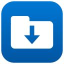

Email Save
Il componente aggiuntivo gratuito per Outlook che salva gli allegati in SharePoint o OneDrive con due clic. Scegli sito, libreria e cartella in una finestra grande con ricerca e filtri.
Ottieni dal Microsoft Marketplace
Cosa fa
- Finestra grande di scelta: cerca i siti SharePoint per nome o indirizzo, filtra tra Recenti, Seguiti e Tutti, ordina per nome o ultima modifica.
- Sceglie libreria e cartella, con filtro, e crea nuove cartelle al volo.
- Preferiti, cartelle recenti e suggerimento automatico della cartella già usata per lo stesso mittente o azienda.
- Salva più allegati insieme, anche file grandi. Se il file esiste: rinomina, sostituisci (nuova versione) o non salvare.
- Se vuoi, salva anche l'e-mail intera come file .eml (anche quando non ha allegati).
- Restituisce il link al file salvato, pronto da copiare.
- I file vanno direttamente dal tuo Outlook al tuo Microsoft 365: nessun server nostro in mezzo.
Come si installa
1. Microsoft Marketplace (consigliato)
Apri la scheda sul Marketplace e fai clic su Ottieni. In Outlook, nella barra del messaggio, compare il gruppo Email Save con il pulsante Salva in SharePoint.
2. Per tutta l'organizzazione (amministratore)
Nell'interfaccia di amministrazione di Microsoft 365: Impostazioni → App integrate → Carica app personalizzate, scegli Add-in di Office, carica manifest.xml, scegli gli utenti e distribuisci. I nomi dei menu possono variare con gli aggiornamenti di Microsoft.
3. Solo per te (senza Marketplace)
Scarica manifest.xml, apri aka.ms/olksideload, scegli Aggiungi un componente aggiuntivo → Aggiungi da file. Se l'opzione non c'è, l'amministratore ha limitato i componenti personalizzati.
Primo accesso. Il componente chiede di accedere con l'account Microsoft 365 e di consentire l'accesso ai file. In molte organizzazioni la prima approvazione spetta a un amministratore: vedi Supporto.
Requisiti: account Microsoft 365 con Exchange Online, OneDrive o SharePoint; Outlook sul web, Outlook per Windows (nuovo e classico) o Outlook per Mac. Non supportati: caselle condivise, account IMAP o POP, server Exchange installati in azienda, dispositivi mobili.
Email Save
The free Outlook add-in that saves attachments to SharePoint or OneDrive in two clicks. Pick the site, library and folder in a large window with search and filters.
Get it from Microsoft Marketplace
What it does
- Large picker window: search SharePoint sites by name or address, filter by Recent, Following and All, sort by name or last modified.
- Pick the library and folder, with a filter, and create new folders on the spot.
- Favorites, recent folders and an automatic suggestion of the folder you already used for the same sender or company.
- Saves several attachments at once, including large files. If the file exists: rename, replace (new version) or don't save.
- If you want, it also saves the whole email as an .eml file (even when it has no attachments).
- Gives you the link to the saved file, ready to copy.
- Files go straight from your Outlook to your Microsoft 365: no server of ours in between.
How to install
1. Microsoft Marketplace (recommended)
Open the Marketplace listing and click Get it now. In Outlook, the message toolbar shows the Email Save group with the Save to SharePoint button.
2. For your whole organization (administrator)
In the Microsoft 365 admin center: Settings → Integrated apps → Upload custom apps, choose Office Add-in, upload manifest.xml, pick the users and deploy. Menu names may change as Microsoft updates the admin center.
3. Just for you (without the Marketplace)
Download manifest.xml, open aka.ms/olksideload, choose Add a custom add-in → Add from file. If the option is missing, your administrator has restricted custom add-ins.
First sign-in. The add-in asks you to sign in with your Microsoft 365 account and to allow access to your files. In many organizations the first approval has to come from an administrator: see Support.
Requirements: a Microsoft 365 account with Exchange Online and OneDrive or SharePoint; Outlook on the web, Outlook for Windows (new and classic) or Outlook for Mac. Not supported: shared mailboxes, IMAP or POP accounts, on-premises Exchange servers, mobile devices.